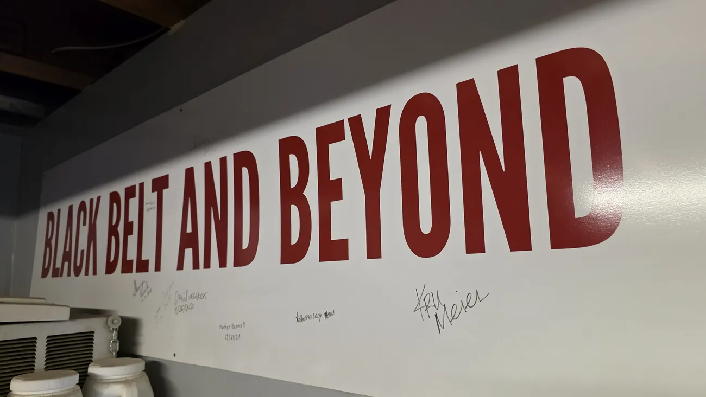

THE BELT EXPLORER
Find what you're training.
Select a rank or search across all nine belts. Use filters to narrow the requirements.
Loading requirements…
Searching automatically includes all belts.
Choose a belt
Selected: WhiteTHE PATH CONTINUES
Black belt and beyond.
Your gym photos also show this wall display. Scott should confirm how it relates to the nine posted rank sheets before we publish details.
